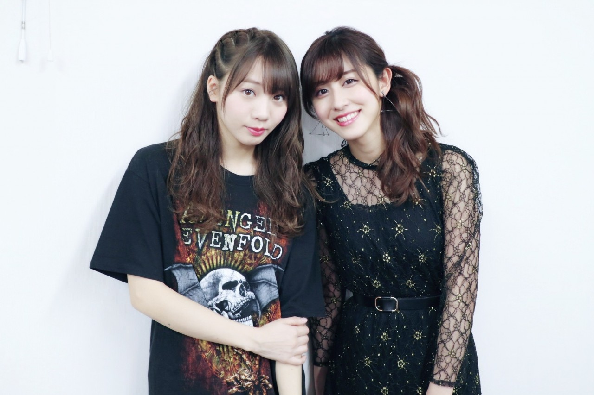

| 2017/03 07 Tue | びっくり |
今日おばあちゃんちに行って
話してたら衝撃的な事実が...！

この黒のレースのワンピース、
叔母も着ていたけど
元々はおばあちゃんが着ていたものだった！！
えー！！ってなったよ(OvO)
物持ちが良すぎて驚き〜(OvO)
三世代に渡って活躍しているワンピースでした笑
！ChihAnswer！
 うりゃおい八太郎さん
うりゃおい八太郎さん
・今大学は春休みだけど、春休み中にやりたいこととかってありますか？
→沢山ありますよ〜！
スノボを初挑戦してみたいし、
旅行にも行ってみたいし、
カメラを持って一人旅をしてみたい！
でもなかなか実現はしなさそう(> <)
とももさん
・お菓子作りする男子ってどう思いますか？
→とっても素敵だと思います！！
私もお菓子が大好きだから
色々話せるのも嬉しいし！
いつでも味見するから持ってきて〜って感じです笑
お菓子=女子のものって
考えなくて全然いいと思います◎
つかささん
・ちーちゃんは乃木坂オーディションでは何を歌ったの？
→木村カエラさんの"Butterfly"を
歌わせていただきました！
お母さんや叔母とカラオケに行って
何曲か候補の曲を歌った中で
1番しっくりきたのがこの曲でした。
今でも聞くと思い出す、
私にとって思い出の一曲です☺︎
おーがさん
・最近ご飯に合うおかずでオススメなのあるかな？
→私が大好きなのは海苔の佃煮！
いつ食べても美味しいくて好き。
納豆が好きならプラスで生卵をかけて
さらに醤油も少し垂らすと
いつもの納豆とは違った味で、
しかも美味しいよ〜
あと今日お母さんが作ってくれたのは
無限ピーマンっていう、
ピーマンとツナで作るご飯のお供！
美味しくて無限に食べられるからって
この名前になったんだって。
簡単に作れるみたいだからオススメです◎
ベジータさん
・いつもやってるルーティーンってありますか？
→私は専らブログです。
夜寝る前に書かないと
落ち着かなくなってしまいます笑
でもこうしてブログ毎日更新が
続けていられるのは
皆さんが見てくれているからです！
ちらっとでも覗いてくれてありがとう。
そしてコメントしてくれている皆さんも
わざわざ本当にありがとう。
感謝しています。
くぼさん
・四月から大学生になるんですけど、うまくやっていけるか不安です。ちはるさんが大学生になった時はどうでしたか？
→私も不安ばかりでした！
友達が出来なかったらどうしようとか
付いていけるのかなとか。
でもこんな私でもなんとかなっているし
仲の良いお友達も出来たし
そんなに心配する事ないのかなとも思います。
背伸びせず自分が自分らしくいられる
友達が出来たらそれだけで財産かも！
誰でもスタートは不安に感じるもの。
多分周りの一緒に入学してくる人たちも
同じ気持ちだと思うから
一言声かけてあげるだけでも嬉しいかもね◎
トシオ009さん
・定期的に食べたくなるものってありますか？
→少し変わってるかもしれないですが、
タコライス！
真冬でも食べたくなってしまう。
野菜とお肉の絶妙なバランス、
大好きな玉子がとろーりしてるところ。
久しぶりに食べたくなってきた！
ちかびっしゅさん
・TWICEさんの「TT」ポーズって知らないんだけど、どんななの？
→こういうのだよ！！って
写真載せたいと思って撮ったんだけど
すっぴん+パジャマ×部屋の影で
ブログに載せるにはお見苦しすぎるので
メイクバッチリな時に撮りますね(> <)
今日はここまで！！
少し語り過ぎた感もありますが...
読んでくれたら嬉しいな◎
今日も沢山質問してくださった皆さん
ありがとうございました( ¨̮ )
----------------------------------------------♡
♬ ChihaMusic
「やさしくなりたい」斉藤和義さん
たまに聴きたくなるこの渋い声。
演奏もとってもかっこいいな〜
斉藤さんの歌好き！
"強くなりたい 強くなりたい
我慢ばかりじゃ 誤魔化しばかりじゃ"
我慢をせず、誤魔化しをしないで
自分をしっかりと持った
強い自分になりたいな。
でもやさしくもなりたい。
自分にぴったりな気がする。
ん〜それにしても
おばあちゃんの服だったとはな〜☺︎笑
おばあちゃんのお洋服を
よくおさがりで貰うんだけど、
全部物もいいし形も素敵だし
全部お気に入りになる！！
また握手会でも着たいと思います〜
おやすみ
斎藤ちはる
コメント(268)
2017/03/07 23:48